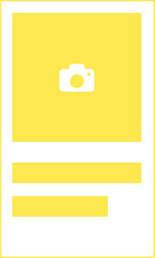

<!--
  Generated template for the CreateRecipePage page.

  See http://ionicframework.com/docs/components/#navigation for more info on
  Ionic pages and navigation.
-->
<ion-header>
  <ion-grid>
    <ion-row>
      <ion-col col-2>
        <ion-icon name="close" (click)="close()" style="font-size: 25px !important; color: grey;"></ion-icon>
      </ion-col>
    </ion-row>
  </ion-grid>
</ion-header>


<ion-content style="text-align: center">

  <div>
    
  </div>
  <p style="font-size: 1.5em">分享的人是厨房里的天使</p>
  <div class="create">
    <div class="create_left" (click)="create_recipe_name()">
      
      <p>创建菜谱</p>
    </div>
    <div class="create_right" (click)="createMenu()">
      
      <p>创建菜单</p>
    </div>
  </div>
</ion-content>
